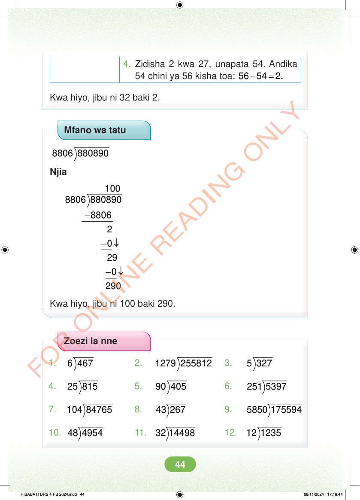

4. Zidisha 2 kwa 27, unapata 54. Andika 54 chini ya 56 kisha toa: – = 56 54 2. Kwa hiyo, jibu ni 32 baki 2. Mfano wa tatu 8806 880890 Njia 100 8806 880890 - -↓ -↓ Kwa hiyo, jibu ni 100 baki 290. Zoezi la nne 1. 6 467 2. 1279 255812 3. 5 327 4. 25 815 5. 90 405 6. 251 5397 7. 104 84765 8. 43 267 9. 5850 175594 10. 48 4954 11. 32 14498 12. 12 1235 HISABATI DRS 4 PB 2024.indd 44 HISABATI DRS 4 PB 2024.indd 44 06/11/2024 17:16:44 06/11/2024 17:16:44